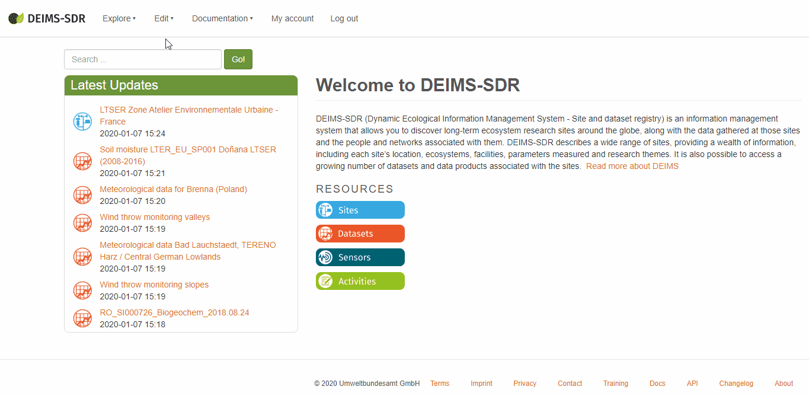

Working with my content
Finding my content
When you are logged in, you can find all of your content in the menu under “Edit/My Content”
or directly at https://deims.org/my-content
Deleting my content
If you want to delete a person. Click on the person you created. You should now see a delete link. Just click it. Not every user has the right to delete people. Please contact us if you have any further questions.
Please keep in mind that if you delete a person you also delete all references to that person. This means that every content you provided, for example as a metadata provider, will be left empty if the corresponding person was deleted. You can see the associated sites and datasets when viewing a person record.
You can’t delete site records. If a site records becomes obselete, please contact us.